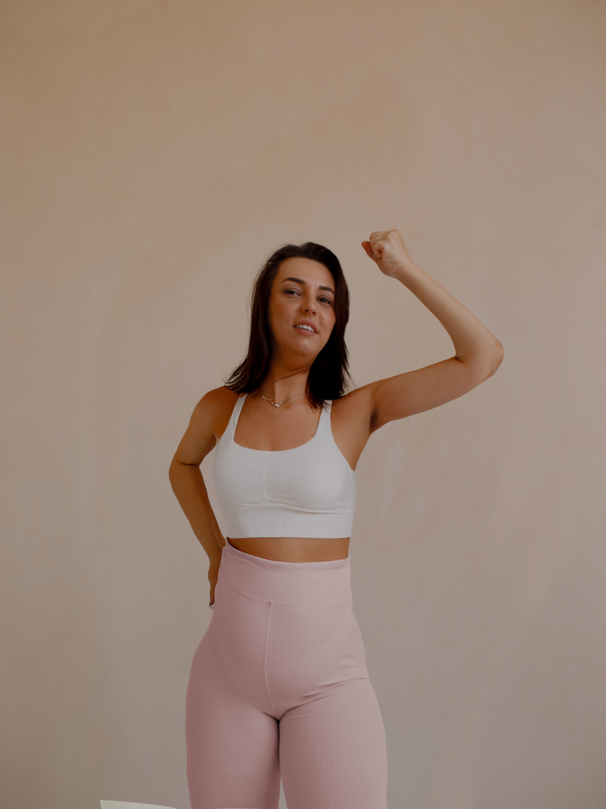
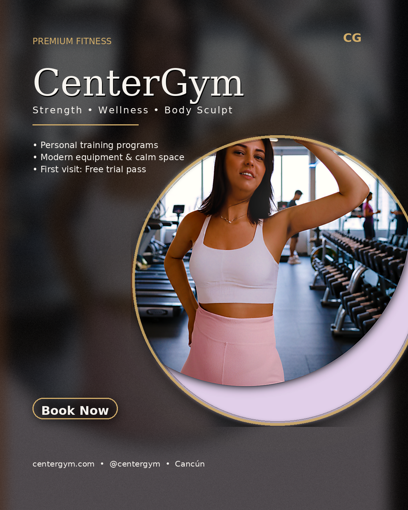
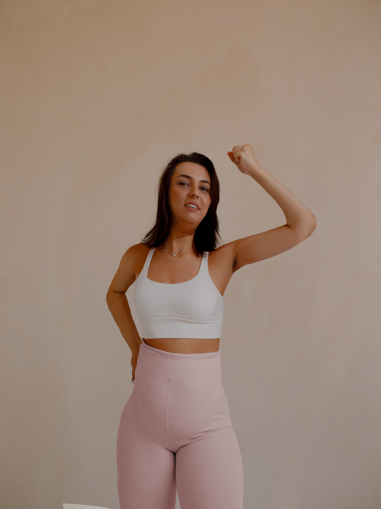
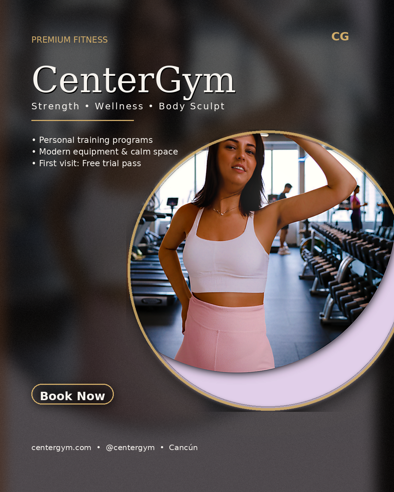

Desarrollo
Sitios rápidos y accesibles, SEO técnico, buenas prácticas.
Desarrollador web y especialista en marketing digital. Creo experiencias rápidas, accesibles y medibles.

Soy un profesional multidisciplinario con foco en desarrollo web, marketing de rendimiento y diseño. Trabajo con HTML, CSS, JavaScript, PHP, WordPress, Git/GitHub y Adobe CC; integro analítica y SEO/SEM para lograr impacto real.
Idiomas: Español nativo · Inglés básico (en proceso de mejora orientado a contexto profesional).
Sitios rápidos y accesibles, SEO técnico, buenas prácticas.
KPIs: CPL, CAC, ROAS y crecimiento sostenible.
Sistemas visuales consistentes y usables.
Monitorizo y analizo los indicadores clave de las campañas para optimizar presupuesto, segmentación y creatividades. Trabajo con datos reales de plataformas como Facebook Ads, Instagram Ads, Google Ads y dashboards en Excel / Power BI.
Mide cuánto pagas por cada clic. Lo uso para comparar anuncios, audiencias y ubicaciones, detectando dónde el presupuesto es más eficiente.
Indica cuánto cuesta conseguir cada registro o contacto. Es clave para cursos, servicios y generación de prospectos.
Porcentaje de personas que hacen clic sobre las impresiones. Me ayuda a evaluar si el mensaje y el diseño están llamando la atención.
Relación entre lo invertido y lo generado. Permite saber si la campaña es rentable y qué canales aportan más valor.
Ejemplo ilustrativo con datos simulados para mostrar cómo interpreto los KPIs de cada campaña.
| Campaña | Impresiones | Clics | CPC | CPL | CTR | ROAS | Estado |
|---|---|---|---|---|---|---|---|
| Curso online – leads | 85,300 | 3,420 | $2.80 | $45.00 | 4.0% | 4.2x | Escalar |
| Negocio local – awareness | 120,500 | 2,150 | $3.10 | – | 1.8% | – | Optimizar |
| Reel ofertas – remarketing | 32,900 | 1,980 | $1.95 | $38.00 | 6.0% | 5.1x | Top |
Además de configurar y optimizar campañas, trabajo el análisis de datos para entender qué funciona, qué no y dónde es mejor invertir el presupuesto. Uso Excel, Google Sheets, Power BI y Python para transformar datos en decisiones claras.
Mi objetivo es que los datos no se queden en un archivo, sino que sirvan para tomar decisiones concretas: qué pausar, qué escalar y qué probar.
Ejemplo basado en campañas reales de cursos, mostrando el impacto del análisis de datos en el costo por lead y el retorno de la inversión.
| Estado | CPL | CTR | ROAS | Acciones clave |
|---|---|---|---|---|
| Antes de optimizar | $75.00 | 1.9% | 1.8x | Segmentación amplia, creativos genéricos, landing sin pruebas A/B. |
| Después de optimizar | $45.00 | 4.0% | 4.2x | Refinar públicos, nuevos copies y creativos, mejoras en formulario y pruebas A/B en la landing. |
Estas gráficas son ejemplos de análisis realizados con Python (pandas y matplotlib), exportados a imagen para usarlos en reportes y dashboards.
Procesando datos ...
import pandas as pd
import matplotlib.pyplot as plt
# Datos de ejemplo
data = {
"mes": ["Ene", "Feb", "Mar", "Abr", "May", "Jun"],
"cpl_antes": [75, 72, 68, 62, 58, 55],
"cpl_despues": [55, 52, 50, 48, 46, 45],
}
df = pd.DataFrame(data)
# Gráfica de línea CPL antes vs después
plt.figure(figsize=(6, 4))
plt.plot(df["mes"], df["cpl_antes"], marker="o", label="Antes")
plt.plot(df["mes"], df["cpl_despues"], marker="o", label="Después")
plt.title("Evolución del CPL por mes")
plt.xlabel("Mes")
plt.ylabel("CPL ($)")
plt.legend()
plt.tight_layout()
plt.savefig("assets/images/charts/cpl_evolucion.png", dpi=120)
plt.close()
Trabajo tus proyectos como una red: combinando desarrollo web, marketing de rendimiento y análisis de datos para generar ideas accionables, no solo reportes.
Configurando red neuronal…


En esta sección muestro cómo un diseño va evolucionando: desde el boceto inicial hasta la versión final lista para el cliente.
Boceto → refinamiento → versión final.
 



Composición, color y retoque final.
Aquí muestro algunos de los videos que edito con Adobe Premiere Pro, desde piezas promocionales hasta contenido para cursos y redes sociales.
Video promocional para campaña en redes sociales, enfocado en la experiencia del alumno.
Reel vertical pensado para Instagram y TikTok, mostrando el ambiente de un negocio local.
Intro animada para los módulos del curso, con logo y transición suave.
¿Tienes un proyecto en mente? Escríbeme y construyamos algo increíble.
Tonathiu Palma